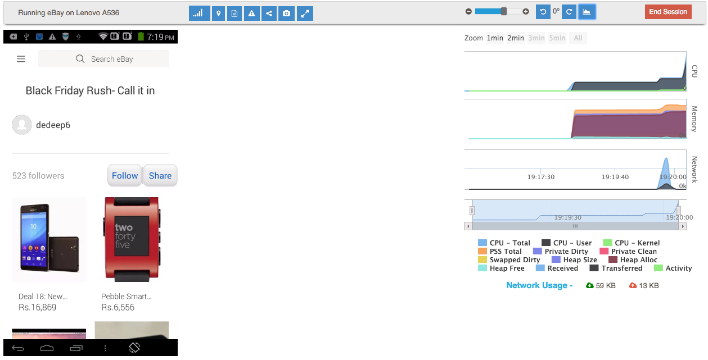

Manual Testing¶
Once you have selected the build you wish to test, click on the Manual tile to start executing your manual tests. Clicking on Manual tile will show you the device selection dialog. Select the device you wish to test on by clicking on the Select button.
Alternatively, you can also filter devices by platform version, screen size, hardware configuration e.g. Memory and CPU.
Once you select the device, the device is made available to you - but only after the earlier sessions have been cleaned up and any unwanted apps have been removed. Once the device is ready for use, the selected build is installed on the device and is ready for you to start your tests.
The Manual test screen consists of three main parts
Device Screen: This is the screen of the device that you wish to test on. You can perform various gestures like tap, swipe, scroll with the help of mouse/trackpad and keyboard. The buttons at the bottom of the screen are available for use as Android navigation buttons.
PS: We recommend using a mouse (of the computer kind) as opposed to a trackpad for a better test experience.
Test Configuration Section: This section provides features to perform the tests in an enhanced environment and to make the job of testing easier. Following is a brief on each of these features
Simulate Network Condition - Use this option to simulate a specific type of network e.g. EDGE, HSPA, 3G, WiFi. Note that all the network conditions are simulated on WiFi. You can also use this feature to turn off WiFi and test how your app works without data network.
PS: Your device could also have data network through carrier, in which case you can turn it off for correct results.
Simulate device location: Use this feature to set the location of your device by providing the latitude and longitude of the location you wish to set the device location to.
Simulate Device Orientation: You can use this feature to simulate the orientation of the device. Change device orientation to test app performance and functionality in landscape and portrait modes.
Device Logs: You can view the logcat report in a tabular format with options to filter by tag or by the log level. You can also export the log in CSV format. You can also view the Application Not Responding(ANR) log report to investigate any cases of, well, “Application Not Responding”
Control Screen Size: You can also control the size of the screen using the slider widget. This is useful in case you want to look at the app in more detail and want to verify the rendering of various objects on the screen.
Collaborate: While you are testing your application, you can easily collaborate with your team by sharing the device screen with them. You can also get the screen of the device you are testing on, on your own mobile device by scanning the QR code on the collaborate pop-up.
PS: Note that in case of enterprise installations, your RobusTest installation should be reachable from the device or computer you are using to access the device.
Screenshot - If you wish to take screenshot of a particular screen on your app, you just need to click on the Screenshot button.
Distraction-free mode - Use the device in this mode, in case you wish to blank out everything else on the manual test screen and view just the device.
Performance Graph: The performance graph has three sub-sections - CPU, Memory and Network.
- In the CPU graph you can monitor the percentage of CPU being used in User and Kernel modes.
- In the Memory graph, you can monitor the memory being used by the app including heap allocations. The following link is a useful place to start understanding the various metrics presented in the Memory graph http://developer.android.com/tools/debugging/debugging-memory.html
- In the Network graph, you can look at the data exchanged from the device to the network - in real time as well as cumulatively.
These graphs are very useful in studying the performance of the app especially with respect to any actions performed on the app.
Once your test is complete, you can click on End Session to exit the test session.